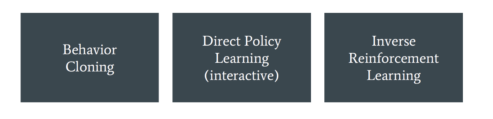
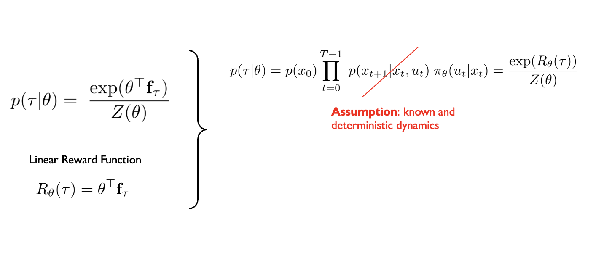
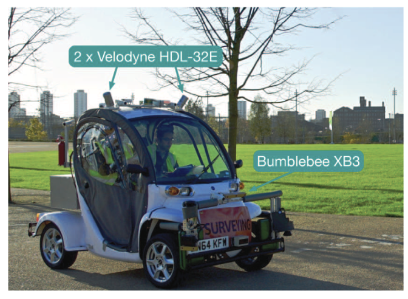

CSC2626 Imitation Learning for Robotics
Week 5: Learning Reward Functions
Today’s agenda
- Learning linear rewards from trajectory demonstrations in 2D
- Learning nonlinear rewards from trajectory demonstrations in 2D
- Guided cost learning in any D
- Updating distributions over reward parameters using preference elicitation
- Human-robot dialog with uncertainty quantification
Maximum Entropy Inverse Reinforcement Learning
Ziebart, Maas, Bagnell and Dey
Presented by Sergio Casas
Imitation Learning approaches
• In Imitation Learning, we want to learn to predict the behavior an expert agent would choose.
• So far, we have seen two main paradigms to tackle this problem
Imitation Learning approaches
• In Imitation Learning, we want to learn to predict the behavior an expert agent would choose.
• Today, we introduce a third paradigm: Inverse Reinforcement Learning (IRL)
Basic Principle
- IRL reduces the imitation problem to:
- Recovering a reward function given a set of demonstrations.
- Solving the MDP using RL to recover the policy, conditioned on our learned reward.
- IRL assumes that the reward function provides the most concise and transferable definition of the task
Background [Ng & Russell 2000, Abbeel & Ng 2004]
- More formally, we want to find a reward function R* that explains the expert behavior such that:
\[ \mathbb{E} \left[ \sum_{t} R^{*}(s_{t}) \mid \pi^{*} \right] \geq \mathbb{E} \left[ \sum_{t} R^{*}(s_{t}) \mid \pi \right] \quad \forall \pi \]
- IRL Challenges:
- Assumes we know the expert policy \(\pi^*\), but we only observe sample trajectories
- Assumes optimality of the expert
- Assumes we can enumerate all policies
- Reward function ambiguity (eg. R=0 is a solution)
Background [Ng & Russell 2000, Abbeel & Ng 2004]
- We define feature expectations (or feature counts) as:
\[ \mathbf{f}_{\pi} = \mathbb{E} \left[ \sum_{t} \mathbf{f}_{s_t} \mid \pi \right] \]
- Let the reward be a linear function of the state features:
\[ R(s) = \theta^{\top} \mathbf{f}_s \]
- Therefore, we can calculate the expected reward of a policy as:
\[ \mathbb{E} \left[ \sum_{t} R(s_t) \mid \pi \right] = \mathbb{E} \left[ \sum_{t} \theta^{\top} \mathbf{f}_{s_t} \mid \pi \right] = \theta^{\top} \mathbb{E} \left[ \sum_{t} \mathbf{f}_{s_t} \mid \pi \right] = \theta^{\top} \mathbf{f}_{\pi} \]
Background [Ng & Russell 2000, Abbeel & Ng 2004]
- We can also define the feature counts of a trajectory \(\tau\) :
\[ f_{\tau} = \sum_{s_t \in \tau} f_{s_t} \]
- And the expected empirical feature count from \(m\) sample trajectories of a policy:
\[ \tilde{f}_{\pi} = \frac{1}{m} \sum_i f_{\tau_i} \]
- Finally, we can obtain an unbiased estimate of the expected reward of a policy as:
\[ \mathbb{E} \left[ \sum_t R(s_t) \mid \pi \right] \approx \theta^\top \tilde{f}_{\pi} \]
Background [Ng & Russell 2000, Abbeel & Ng 2004]
- Therefore, we can rewrite our inequality as:
\[ \theta^{*\top} f_{\pi^*} \geq \theta^{*\top} f_{\pi} \]
which can in turn be approximated when having a dataset \(D\) of expert demonstrated trajectories \(D\) as:
\[ \theta^{*\top} f_D \geq \theta^{*\top} f_{\pi} \quad \text{where} \quad f_D = \tilde{f}_{\pi^*} \]
- By sampling expert trajectories to compute the feature count estimate, we tackle the challenge of the partial observability of the expert policy.
Maximum Entropy IRL [Ziebart et al. 2008]
Let’s recap the IRL Challenges:
Assumes we know the expert policy \(\pi^*\)
Assumes optimality of the expert
Assumes we can enumerate all policies
Reward function ambiguity (e.g. R=0 is a solution)
Maximum Entropy Principle
\[ H(p) = -\int_x p(x)\log p(x)dx \]
\[ p(x) = ? \qquad \begin{cases} \underset{p(x)}{\text{argmax}} \, \mathcal{H}(p) \\[0.5em] \text{subject to} \int_a^b p(x)dx = 1 \qquad \end{cases} \]
Maximum Entropy Principle
\[ p(x) = ? \qquad \begin{cases} \underset{p(x)}{\text{argmax}} \, \mathcal{H}(p) \\[0.5em] \text{subject to} & \int_x p(x)dx = 1 \\[0.5em] & \mathbb{E}_{x \sim p(x)}[x] = \frac{1}{|D|} \sum_{x_i \in D} x_i = \hat{\mu} \\[0.5em] & \mathbb{V}_{x \sim p(x)}[x] = \frac{1}{|D|} \sum_{x_i \in D} (x_i - \hat{\mu})^2 = \hat{\sigma}^2 \end{cases} \]
Maximum Entropy IRL [Ziebart et al. 2008]
\[ p(\tau|\theta) = ? \qquad \begin{cases} \underset{p(\tau|\theta)}{\text{argmax}} \, \mathcal{H}(p) \\[0.5em] \text{subject to} & \sum_{\tau} p(\tau|\theta) = 1 \\[0.5em] & \mathbb{E}_{\tau \sim p(\tau|\theta)}[\mathbf{f}_{\tau}] = \frac{1}{|D|} \sum_{\tau \in D} \mathbf{f}_{\tau} \end{cases} \]
Assumption: Trajectories (states and action sequences) here are discrete
Maximum Entropy IRL [Ziebart et al. 2008]
Applying the principle of maximum entropy breaks the ambiguity of the reward function.
Leads us to a distribution over behaviors constrained to match feature expectations of the demonstrations while having no preference to any particular path that fits this constraint.
Maximum Entropy IRL [Ziebart et al. 2008]
\[ p(\tau|\theta) = \frac{\exp(\theta^{\top}\mathbf{f}_{\tau})}{Z(\theta)} \qquad \begin{cases} \underset{p(\tau|\theta)}{\text{argmax}} \, \mathcal{H}(p) \\[0.5em] \text{subject to} & \sum_{\tau} p(\tau|\theta) = 1 \\[0.5em] & \mathbb{E}_{\tau \sim p(\tau|\theta)}[\mathbf{f}_{\tau}] = \frac{1}{|D|} \sum_{\tau \in D} \mathbf{f}_{\tau} \end{cases} \]
Linear Reward Function
\(R_{\theta}(\tau) = \theta^{\top}\mathbf{f}_{\tau}\)
Maximum Entropy IRL [Ziebart et al. 2008]
\[ \left. \begin{aligned} p(\tau \mid \theta) &= \frac{\exp\!\bigl(\theta^\top \mathbf{f}_\tau\bigr)}{Z(\theta)} \\[8pt] \textbf{Linear Reward Function}\\ R_\theta(\tau) &= \theta^\top \mathbf{f}_\tau \end{aligned} \right\} \qquad p(\tau \mid \theta) \;=\; p(x_0)\, \prod_{t=0}^{T-1} p(x_{t+1}\!\mid\!x_t,u_t)\,\pi_\theta(u_t\!\mid\!x_t) \;=\; \frac{\exp\!\bigl(R_\theta(\tau)\bigr)}{Z(\theta)} \]
Maximum Entropy Principle [Ziebart et al. 2008]
Maximum Entropy IRL [Ziebart et al. 2008]
Maximum Entropy IRL [Ziebart et al. 2008]
Maximum Entropy IRL [Ziebart et al. 2008]
Maximum Entropy IRL [Ziebart et al. 2008]
State visitation distribution
The exponential growth of paths with the MDPs time horizon makes enumeration-based approaches infeasible.
The authors proposed a DP algorithm similar to value iteration to compute the state visitation distribution efficiently.
Learning from demonstrations [Ziebart et al. 2008]
As we have seen, maximizing the entropy subject to the feature counts constraint is equivalent to maximize the likelihood of the demonstrated trajectories D with an exponential family as our path distribution: \[ \theta^{*} = \arg\max_{\theta} L(\theta) = \arg\max_{\theta} \sum_{\tilde{\tau} \in D} \log P(\tilde{\tau} \mid \theta, T) \]
For deterministic MDPs, this function is convex and can be optimized using gradient descent:
\[ \nabla L(\theta) = \underbrace{\tilde{\mathbf{f}}} - \sum_{\tau} P(\tau \mid \theta, T) \mathbf{f}_{\tau} = \tilde{\mathbf{f}} - \underbrace{\sum_{s_i} \mu_{s_i}} \mathbf{f}_{s_i} \]
In practice we use empirical, sample-based
expectations of the expert agent
State visitation distribution
MaxEnt high-level algorithm
Application: Driver Route Modelling
- Interested in predicting driver behavior and route recommendation
- Pittsburgh’s road network as an MDP
- \(>\) 300,000 states or road segments
- \(>\) 900,000 actions or transitions at intersections
- Destination is represented as an absorbing state with zero-cost. Thus, trips with different destinations will have slightly different MDPs
- Assumption: the reward weights are independent of the goal state. A single reward weight is then learned from many MDPs that only differ in the goal
Application: Driver Route Modelling
- Dataset
- GPS data from >100,000 miles and 3,000 hours of taxi trips
- Fit the sparse GPS data to the road network using a particle filter
- Segmented the traces into 13,000 trips using a time-based threshold to determine stops
- Path features (low dimensional, 22 counts)
- Road type: from interstate to local road
- Speed: from high speed to low speed
- Lanes: from single-lane to many-lanes
- Transitions: straight, left, right, hard left, hard right
Application: Driver Route Modelling
- Maximize the probability of demonstrated paths using MaxEnt IRL*
- Baselines:
- Time-based: Based on expected time travels. Weights the cost of a unit distance of road to be inversely proportional to the speed of the road.
- Max-margin [Ratliff et al. 2006]: Model capable of predicting new paths, but incapable of density estimation. Directly measures disagreement between the expert and learned policy
- Action-based [Ramachandran et al. 2007, Neu et al. 2007]: The choice of an action is distributed according to the future expected reward of the best policy after taking that action. Suffers from label bias (local distribution of probability mass):
MaxEnt: paths 1, 2, 3 will have 33% probability
Action-based: 50% path 3, 25% paths 1 and 2
*applied to a “fixed class of reasonably good paths” instead of the full training set
Application: Driver Route Modelling
- Matching: Average percentage of distance matching
- 90% Match: Percentage of examples with at least 90% matching distance
- Log Prob: Average log probability
Application: Driver Route Modelling
- Learned costs:
- Additionally, learned a fixed per edge cost of 1.4 seconds to penalize roads composed of many short paths
Application: Driver Route Modelling
- Predicting destination: so far we have only described situations where the driver intended destination is known. We can use Bayes rule to predict destination* given our current model.
\[ P(\text{dest} \mid \tilde{\tau}_{A \rightarrow B}) \propto P(\tilde{\tau}_{A \rightarrow B} \mid \text{dest}) \, P(\text{dest}) \]
\[ \propto \frac{\sum_{\tau_{B \rightarrow \text{dest}}} e^{\theta^{\top} f_{\tau}}}{\sum_{\tau_{A \rightarrow \text{dest}}} e^{\theta^{\top} f_{\tau}}} \, P(\text{dest}) \]
*posed as a multiclass classification problem over 5 possible destinations
Reflections
- Solves the reward ambiguity problem by applying the Maximum Entropy theorem, i.e. using path distributions in the exponential family
- SOTA performance and guarantees a t the time for linear reward functions
- Derivations assume linear reward function
- MaxEnt IRL requires to know the environment dynamics T (model-given)
- Need to solve full RL problem at each iteration. Only reasonable for small MDPs, i.e. low-dimensional state-action spaces
Today’s agenda
Learning linear rewards from trajectory demonstrations in 2D
Learning nonlinear rewards from trajectory demonstrations in 2D
Guided cost learning in any D
Updating distributions over reward parameters using preference elicitation
Human-robot dialog with uncertainty quantification
Large scale cost function learning for path planning using deep inverse reinforcement learning
Wulfmeier et. al (IJRR 2017)
Deep Maximum Entropy IRL [Wulfmeier et al. 2017]
Benchmarking
• Two hidden layers
• ReLU activation
• 1x1 filter weights
• Evaluation metric: expected value difference
• Compared against Linear MaxEnt, GPIRL, NPB-FIRL
Benchmarking
Proposed Network Architectures

Large-scale Demonstration
- 13 drivers
- \(>\) 25,000 trajectories 12m-15m long
- Goal: reward map given features
- Steepness
- Corner cases (underpasses, stairs)

Network Input Data
Evaluation
- No absolute ground truth
- Compared against manual cost functions
- Metrics:
- NLL – negative log-likelihood
- MHD – Hausdorff distance
- FNR – False negative rate
- FPR – False positive rate
Robustness to Systematic Noise
Pretraining
Limitations
- Does not address velocity profiles
- Does not consider temporal consistency between consecutive cost maps
- Possibly introduce RNNs or temporal convolutions
Today’s agenda
• Learning linear rewards from trajectory demonstrations in 2D
• Learning nonlinear rewards from trajectory demonstrations in 2D
• Guided cost learning in any D
• Updating distributions over reward parameters using preference elicitation
• Human-robot dialog with uncertainty quantification
Guided Cost Learning [Finn, Levine, Abbeel et al. 2016]
\[ p(\tau|\theta) = \frac{\exp(-c_{\theta}(\tau))}{Z(\theta)} \]
Nonlinear Reward Function
Learned Features
\(p(\tau|\theta) = p(x_0) \prod_{t=0}^{T-1} \underbrace{p(x_{t+1}|x_t, u_t)} \pi_{\theta}(u_t|x_t) = \frac{\exp(-c_{\theta}(\tau))}{Z(\theta)}\)
True and stochastic dynamics (unknown)
Log-likelihood of observed dataset D of trajectories
\[ L(\theta) = \frac{1}{|D|} \sum_{\tau \in D} \log p(\tau|\theta) = \frac{1}{|D|} \sum_{\tau \in D} -c_{\theta}(\tau) - \log Z(\theta) \]
Approximating the gradient of the log-likelihood
\[ p(\tau|\theta) = \frac{\exp(-c_{\theta}(\tau))}{Z(\theta)} \]
Nonlinear Reward Function
Learned Features
\[ \nabla_{\theta} L(\theta) = -\frac{1}{|D|} \sum_{\tau \in D} \nabla_{\theta} c_{\theta}(\tau) + \underbrace{\sum_{\tau} p(\tau \mid \theta) \nabla_{\theta} c_{\theta}(\tau)} \]
How do you approximate this expectation?
Idea #1: sample from \(p(\tau | \theta)\)
(can you do this)
Approximating the gradient of the log-likelihood
\[ p(\tau|\theta) = \frac{\exp(-c_{\theta}(\tau))}{Z(\theta)} \]
Nonlinear Reward Function
Learned Features
\[ \nabla_{\theta} L(\theta) = -\frac{1}{|D|} \sum_{\tau \in D} \nabla_{\theta} c_{\theta}(\tau) + \underbrace{\sum_{\tau} p(\tau \mid \theta) \nabla_{\theta} c_{\theta}(\tau)} \]
How do you approximate this expectation?
Idea #1: sample from \(p(\tau | \theta)\)
(don’t know the dynamics)
Idea #2: sample from an easier distribution \(q(\tau | \theta)\)
that approximates \(p(\tau | \theta)\)
Importance Sampling
see Relative Entropy Inverse RL by Boularias, Kober, Peters
Importance Sampling
How to estimate properties/statistics of one distribution (p) given samples from another distribution (q)
\[ \begin{align} \mathbb{E}_{x \sim p(x)}[f(x)] &= \int f(x)p(x)\,dx \\ &= \int \frac{q(x)}{q(x)} f(x)p(x)\,dx \\ &= \int f(x)p(x)\frac{q(x)}{q(x)}\,dx \\ &= \mathbb{E}_{x\sim q(x)}\left[ f(x)\frac{p(x)}{q(x)}\right] \\ &= \mathbb{E}_{x\sim q(x)}[f(x)w(x)] \end{align} \]
Weights = likelihood ratio, i.e. how to reweigh samples to obtain statistics of p from samples of q
Importance Sampling: Pitfalls and Drawbacks
What can go wrong?
\[ \begin{align} \mathbb{E}_{x \sim p(x)}[f(x)] &= \int f(x)p(x)\,dx \\ &= \int \frac{q(x)}{q(x)} f(x)p(x)\,dx \\ &= \int f(x)p(x)\frac{q(x)}{q(x)}\,dx \\ &= \mathbb{E}_{x\sim q(x)}\left[ f(x)\frac{p(x)}{q(x)}\right] \\ &= \mathbb{E}_{x\sim q(x)}[f(x)w(x)] \end{align} \]
Problem #1:
If q(x) = 0 but f(x)p(x) > 0
for x in non-measure-zero
set then there is estimation bias
Problem #2:
Weights measure mismatch between q(x) and p(x). If mismatch is large then some weights will dominate. If x lives in high dimensions a single weight may dominate
Problem #3:
Variance of estimator is high if (q – fp)(x) is high
For more info see:
#1, #3: Monte Carlo theory, methods, and examples, Art Owen, chapter 9
#2: Bayesian reasoning and machine learning, David Barber, chapter 27.6 on importance sampling
Importance Sampling
What is the best approximating distribution q?
\[ \begin{align} \mathbb{E}_{x \sim p(x)}[f(x)] &= \int f(x)p(x)\,dx \\ &= \int \frac{q(x)}{q(x)} f(x)p(x)\,dx \\ &= \int f(x)p(x)\frac{q(x)}{q(x)}\,dx \\ &= \mathbb{E}_{x\sim q(x)}\left[ f(x)\frac{p(x)}{q(x)}\right] \\ &= \mathbb{E}_{x\sim q(x)}[f(x)w(x)] \end{align} \]
Best approximation \(q(x) \propto f(x)p(x)\)
Importance Sampling
How does this connect back to partition function estimation?
\[ \begin{align} Z(\theta) &= \sum_{\tau} \exp(-c_{\theta}(\tau)) \\ &= \sum_{\tau} \exp(-c_{\theta}(\tau)) \\ &= \sum_{\tau} \frac{q(\tau|\theta)}{q(\tau|\theta)} \exp(-c_{\theta}(\tau)) \\ &= \mathbb{E}_{\tau \sim q(\tau|\theta)} \left[ \frac{\exp(-c_{\theta}(\tau))}{q(\tau|\theta)} \right] \end{align} \]
Best approximation \(q(\tau | \theta) \propto exp(-c_{\theta} (\tau))\)
Cost function estimate changes at each gradient step
Therefore the best approximating distribution should change as well
Approximating the gradient of the log-likelihood
\[ p(\tau|\theta) = \frac{\exp(-c_{\theta}(\tau))}{Z(\theta)} \]
Nonlinear Reward Function
Learned Features
\[ \nabla_{\theta} L(\theta) = -\frac{1}{|D|} \sum_{\tau \in D} \nabla_{\theta} c_{\theta}(\tau) + \underbrace{\sum_{\tau} p(\tau \mid \theta) \nabla_{\theta} c_{\theta}(\tau)} \]
How do you approximate this expectation?
Idea #1: sample from \(p(\tau | \theta)\)
(don’t know the dynamics)
Idea #2: sample from an easier distribution \(q(\tau | \theta)\)
that approximates \(p(\tau | \theta)\)
Guided Cost Learning
How do you select q?
How do you adapt it as the cost c changes?
Guided Cost Learning: the punchline
How do you select q?
How do you adapt it as the cost c changes?
Given a fixed cost function c, the distribution of trajectories that Guided Policy Search computes is close to \(\frac{\exp(-c(\tau))}{Z}\)
i.e. it is good for importance sampling of the partition function Z
Recall: Finite-Horizon LQR
\(P_0 = Q\)
// \(n\) is the # of steps left
for \(n = 1 \dots N\)
\(K_n = -(R + B^T P_{n-1} B)^{-1} B^T P_{n-1} A\)
\(P_n = Q + K_n^T R K_n + (A + B K_n)^T P_{n-1} (A + B K_n)\)
Optimal control for time \(t = N - n\) is \(u_t = K_t x_t\) with cost-to-go \(J_t(x) = x^T P_t x\)
where the states are predicted forward in time according to linear dynamics.
Recall: LQG = LQR with stochastic dynamics
Assume \(x_{t+1} = Ax_t + Bu_t + w_t\) and \(c(x_t, u_t) = x_t^T Q x_t + u_t^T R u_t\)
\(\uparrow\)
zero mean Gaussian
Then the form of the optimal policy is the same as in LQR: \(u_t = K \hat{x}_t\) \(\color{red} \leftarrow\) estimate of the state
No need to change the algorithm, as long as you observe the state at each step (closed-loop policy)
Linear Quadratic Gaussian LQG
Deterministic Nonlinear Cost & Deterministic Nonlinear Dynamics
\[ \begin{align} u_0^*, \ldots, u_{N-1}^* &= \underset{{u_0, \ldots, u_N}}{\arg\min} \sum_{t=0}^{N} c(x_t, u_t) \\ & \text{s.t.} \\ & x_1 = f(x_0, u_0) \\ & x_2 = f(x_1, u_1) \\ & ... \\ & x_N = f(x_{N-1}, u_{N-1}) \end{align} \]
Arbitrary differentiable functions \(c\), \(f\)
iLQR: iteratively approximate solution by solving linearized versions of the problem via LQR
Deterministic Nonlinear Cost & Stochastic Nonlinear Dynamics
\[ \begin{align} u_0^*, \ldots, u_{N-1}^* &= \underset{{u_0, \ldots, u_N}}{\arg\min} \sum_{t=0}^{N} c(x_t, u_t) \\ & \text{s.t.} \\ & x_1 = f(x_0, u_0) + w_0 \\ & x_2 = f(x_1, u_1) + w_1 \\ & ... \\ & x_N = f(x_{N-1}, u_{N-1}) + w_{N-1} \end{align} \]
Arbitrary differentiable functions \(c\), \(f\)
\(w_t \sim N(0, W_t)\)
iLQG: iteratively approximate solution by solving linearized versions of the problem via LQG
Recall from Guided Policy Search
\(\underset{q(\tau)}{\text{argmin}} \quad \mathbb{E}_{\tau \sim q(\tau)}[c(\tau)]\)
\(\text{subject to} \quad q(x_{t+1}|x_t, u_t) = \mathcal{N}(x_{t+1}; f_{xt}x_t + f_{ut}u_t, F_t) \qquad \color{red}\Leftarrow \quad \text{Learn linear Gaussian dynamics}\)
\(\qquad \qquad \text{KL}(q(\tau) || q_{\text{prev}}(\tau)) \leq \epsilon\)
\(q_{\text{gps}}(\tau) = \underset{q(\tau)}{\text{argmin}} \quad \mathbb{E}_{\tau \sim q(\tau)}[c(\tau)] - \mathcal{H}(q(\tau))\)
\(\qquad \qquad \text{subject to} \quad q(x_{t+1}|x_t, u_t) = \mathcal{N}(x_{t+1}; f_{xt}x_t + f_{ut}u_t, F_t)\)
\(q_{\text{gps}}(\tau) = q(x_0) \prod_{t=0}^{T-1} q(x_{t+1}|x_t, u_t)q(u_t|x_t)\)
\(\qquad \color{red} \uparrow \qquad \quad \uparrow\)
Linear Gaussian
dynamics and controller
Run controller on the robot
Collect trajectories
\(q_{prev} = q_{gps}\)
Recall from Guided Policy Search
\(\arg\min_{q(\tau)} \; \mathbb{E}_{\tau \sim q(\tau)} [c(\tau)]\)
\(\begin{align} \text{subject to} & \quad q(x_{t+1} \mid x_t, u_t) = \mathcal{N}(x_{t+1}; f_{xt}x_t + f_{ut}u_t, F_t) \color{red} \qquad \Leftarrow \text{Learn Linear Gaussian dynamics} \\ & \text{KL}(q(\tau) \parallel q_{\text{prev}}(\tau)) \leq \epsilon \end{align}\)
Given a fixed cost function c, the linear
Gaussian controllers that GPS computes
induce a distribution of trajectories close to
\(\frac{\exp(-c(\tau))}{Z}\)
i.e. good for importance sampling of the partition function Z
Guided Cost Learning [rough sketch]
Collect demonstration trajectories D
Initialize cost parameters \(\theta_0\)
Do forward optimization using Guided Policy Search for cost function \(c_{\theta_t} (\tau)\)
and compute linear Gaussian distribution of trajectories \(q_{gps} (\tau)\)
\(\nabla_{\theta} L(\theta) = -\frac{1}{|D|} \sum_{\tau \in D} \nabla_{\theta} c_{\theta}(\tau) + \underbrace{\sum_{\tau} p(\tau \mid \theta) \nabla_{\theta} c_{\theta}(\tau)}\)
Importance sample trajectories from \(q_{gps} (\tau)\)
\(\theta_{t+1} = \theta_t + \gamma \nabla_{\theta} L(\theta_t)\)
Regularization of learned cost functions
\[ g_{\text{lcr}}(\tau) = \sum_{x_t \in \tau} \left[ \left(c_{\theta}(x_{t+1}) - c_{\theta}(x_t)\right) - \left(c_{\theta}(x_t) - c_{\theta}(x_{t-1})\right) \right]^2 \]
\[ g_{\text{mono}}(\tau) = \sum_{x_t \in \tau} \left[ \max\left(0, c_{\theta}(x_t) - c_{\theta}(x_{t-1}) - 1\right) \right]^2 \]
Source: https://www.youtube.com/watch?v=hXxaepw0zAw&ab_channel=RAIL
Today’s agenda
• Learning linear rewards from trajectory demonstrations in 2D
• Learning nonlinear rewards from trajectory demonstrations in 2D
• Guided cost learning in any D
• Updating distributions over reward parameters using preference elicitation
• Human-robot dialog with uncertainty quantification
Active Preference-Based Learning of Reward Functions
By: Dorsa Sadigh, Anca D. Dragan, Shankar Sastry, and Sanjit A. Seshia
Preference Based Learning
Learn rewards from expert preference
Have an estimate of reward function
Pick two candidate trajectories
Ask the human which trajectory is preferred
Use preference as feedback to update reward function
• Rewards updated directly
• No inner RL loop
• No probability estimation required
Problem Statement: Autonomous Driving
- 2 vehicles on the road:
- Our orange vehicle denoted ùêª
- Other white vehicle/robot denoted ùëÖ
- States: \((x_H, x_R)\)
- Inputs: \((u_H, u_R)\)
- Dynamics: \(x^{t+1} = f_{HR}(x^t, u_H, u_R)\)
- Finite Trajectories: \(\xi = \{(x^0, u^0_H, u^0_R), \ldots, (x^N, u^N_H, u^N_R)\}\)
- Feasible Trajectories: \(\xi \in \Xi\)
Reward Function
- Reward at a state:
\[ r_H(x^t, u_H^t, u_R^t) = w^T \phi(x^t, u_H^t, u_R^t) \]
- Reward over a finite trajectory: \[ \begin{align} R_H(\xi) &= R_H(x_0, \mathbf{u}_H, \mathbf{u}_R) = \sum_{t=0}^{N} r_H(x^t, u_H^t, u_R^t) \\ &= w^T \Phi(\xi) \end{align} \]
Preference
Given 2 trajectories \(\xi_A\) and \(\xi_B\)
Preference variable ùêº
\[ I = \begin{cases} +1, & \text{if } \xi_A \text{ is preferred} \\ -1, & \text{if } \xi_B \text{ is preferred} \end{cases} \\ \]
\(\xi_A \text{ or } \xi_B \rightarrow I\)
Weight Update
- Assume probabilistic model: weights come from a distribution
- Preference is noisy:
\[ P(I|w) = \begin{cases} \frac{\exp(R_H(\xi_A))}{\exp(R_H(\xi_A)) + \exp(R_H(\xi_B))}, & \text{if } I = +1 \\ \frac{\exp(R_H(\xi_B))}{\exp(R_H(\xi_A)) + \exp(R_H(\xi_B))}, & \text{if } I = -1 \end{cases} \]
- Some simplification:
\(\varphi = \Phi(\xi_A) - \Phi(\xi_B) \qquad \quad f_{\varphi}(w) = P(I|w) = \frac{1}{1 + \exp(-I w^T \varphi)}\)
Generate Trajectories
Two feasible trajectories: \(ùúâ_ùê¥\),\(ùúâ_ùêµ\)
Want each update to give most information
Maximize minimum volume removed with a query:
\(\underset{{\xi_A, \xi_B}}{\max} \min\left( \mathbb{E}_W[1 - f_{\phi}(w)], \; \mathbb{E}_W[1 - f_{-\phi}(w)] \right)\)
A binary query corresponds to selecting sides of hyperplane \(ùíò^ùëª ùúë=0\)
Response increases probability of weights on one side of hyperplane and decreases the other side.
Algorithm Summary
Algorithm Summary
Algorithm Summary
Algorithm Summary
Algorithm Summary
Results
- Weights begin with uniform probability
- Convergence after 200 iterations
Results
- Rate of convergence, active synthesis is faster!
- Blue curve: generated feasible trajectories not optimized for weight updates
- Black curve: non active trajectories, equivalent to expert dataset
- Lighter colours: training on non feasible trajectories
Results
- Perturbation of weights
- Learned weights: \(ùíò^∗\)
- Slightly perturbed weights: \(ùíò^1\)
- Largely perturbed weights: \(ùíò^ùüê\)
- Users prefer \(ùíò^∗\)
Check out their library for preference learning
Today’s agenda
• Learning linear rewards from trajectory demonstrations in 2D
• Learning nonlinear rewards from trajectory demonstrations in 2D
• Guided cost learning in any D
• Updating distributions over reward parameters using preference elicitation
• Human-robot dialog with uncertainty quantification